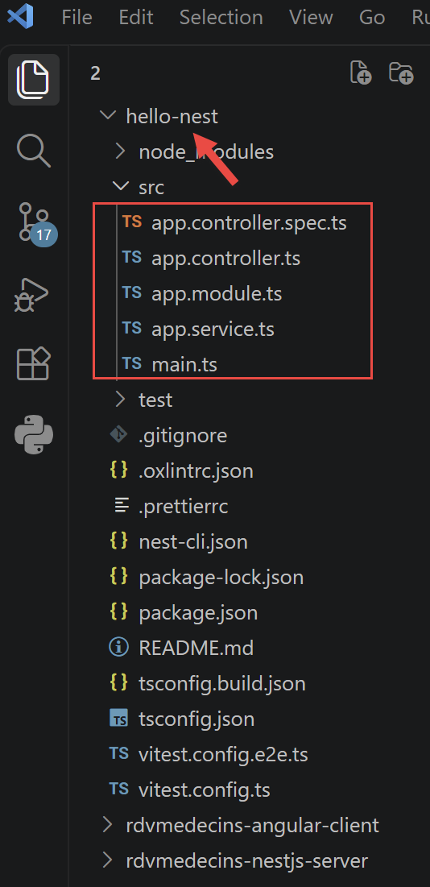

3. Chapter 2 - Introduction to [NestJS]
3.1. Sources
This chapter draws on the following sources:
- the official website for [NestJS]: nestjs.com and its documentation, docs.nestjs.com;
- the framework's GitHub repository: github.com/nestjs/nest.
3.2. The role of [NestJS] in a web application
[NestJS] is a Node.js framework written in TypeScript, designed to build the server-side of a web application —most often a API REST (JSON). It does not reinvent the HTTP protocol handling itself: by default, it relies on Express, a more rudimentary Node.js framework responsible for receiving raw HTTP requests and responding to them. [NestJS] sits on top of this, providing a code organization that neither Node.js nor Express imposes on their own: division into modules, controllers, and services; dependency injection; decorators…
Its architecture is heavily inspired by [Angular] (decorators, modules, dependency injection)—a similarity that will serve us well in Chapter 4, when we encounter exactly the same concepts on the client side.
[NestJS] is primarily designed to produce JSON responses: by default, whatever a controller method returns is automatically converted to JSON and sent to the client, without any special configuration.
3.3. The [NestJS] Development Model
Three concepts form the structure of a [NestJS] application:
- modules (@[Module] decorator): A module groups together a set of interrelated features—it declares which controllers and services belong to it, which other modules it requires, and what it makes available to others. A [NestJS] application always starts from a root module, [AppModule], which assembles all the other modules in the project;
- controllers (@[Controller] decorator): A controller is the application’s entry point—a class in which each method receives HTTP requests corresponding to a specific URL, and returns a response to the client;
- providers (decorator @[Injectable]): a provider is a regular class, typically responsible for business logic or data access, which [NestJS] can automatically create and provide (i.e., “inject”) to any controller or service that needs it.
In practice, a class that needs a provider simply declares it as a parameter in its constructor—[NestJS] creates the necessary instance and passes it automatically, without ever having to write new yourself: this is called constructor-based dependency injection, a practice that is almost universal in NestJS.
3.4. A first example: the “hello” mini-project
To reinforce these three concepts, here’s a very small [NestJS] project, independent of the case study (a single route /hello), which you could create with (type these commands into an empty folder that you’ve opened in VSCode [File/Open Folder]. These commands create a folder named [hello-nest]):

This command generates a project containing the following essential files: [src/main.ts], src/app.module.ts, src/app.controller.ts, src/app.service.ts. These four files alone illustrate the architecture of a [NestJS] application: an entry point ([main.ts]), a root module (app.module.ts), a controller (app.controller.ts), and a service (app.service.ts).
3.4.1. The service
// src/app.service.ts
import { Injectable } from '@nestjs/common';
@Injectable()
export class AppService {
getHello(): string {
return 'Hello World!';
}
}
- line 2: each element used is explicitly imported; here, [Injectable] is imported from [@nestjs/common], the module that contains most of the decorators and utility classes from [NestJS];
- line 4: A decorator is an annotation placed immediately above a TypeScript class, method, or parameter (preceded by the @ symbol), which modifies or enhances its behavior without altering its code—the mechanism upon which virtually the entire NestJS vocabulary is based. @[Injectable]() marks this class as a provider: [NestJS] will create it on its own and automatically provide it to any other class that requests it in its constructor, without ever having to write new [AppService]();
- Line 6: : string declares the return type—a feature specific to TypeScript that is absent in JavaScript.
3.4.2. The controller
// src/app.controller.ts
import { Controller, Get } from '@nestjs/common';
import { AppService } from './app.service.js';
@Controller()
export class AppController {
constructor(private readonly appService: AppService) { }
@Get('bonjour')
getHello(): string {
return this.appService.getHello();
}
}
- Line 5: @Controller() decorates the following class to make it a controller: NestJS will send it the HTTP requests corresponding to its routes. The argument in parentheses is an optional prefix added to the beginning of all the class’s routes—here it is empty: the “hello” route therefore responds directly to /hello;
- Line 7: The constructor declares a parameter named appService of type [AppService], preceded by the modifier TypeScript private readonly, which, in a single line, declares it as ET and registers it as a property of the instance (this.appService). [NestJS] determines that the controller needs a [AppService], creates an instance of it (a single instance, shared by the entire application), and automatically provides it here: this is the constructor-based dependency injection mentioned earlier;
- line 9: [@Get]('hello') associates the following method with the route HTTP GET /hello: it is this decorator that makes the action accessible at the testable address http://localhost:3000/bonjour once the server is running. Other decorators play the same role for the other HTTP verbs: @[Post](), @Put(), @Delete(), @Patch() (we’ll use @[Post]() in the case study for /ajouterRv and /supprimerRv). Note that on line 10, the method name [getHello] is irrelevant. It could be any name;
- line 11: the controller delegates the work to the injected service rather than coding the response itself: it remains a simple routing layer, while the business logic resides in the service—a principle we’ll see, on a larger scale, in the case study in Chapter 3.
3.4.3. The module
// src/app.module.ts
import { Module } from '@nestjs/common';
import { AppController } from './app.controller.js';
import { AppService } from './app.service.js';
@Module({
imports: [],
controllers: [AppController],
providers: [AppService],
})
export class AppModule {}
- line 6: @[Module]({...}) decorates the following class to turn it into a module: it groups a coherent part of the application and declares, in the object passed as an argument, what comprises it. Four properties are possible: controllers (the controllers exposed by this module), providers (the services provided by this module, available for injection within the module), imports (the other modules on which this one depends), and exports (the providers that this module makes available to modules that import it);
- Without the `controllers: [AppController]` line, `[NestJS]` would ignore this controller, and its routes would not respond to any requests; without `providers: [AppService]`, the controller’s dependency injection would fail at startup.
3.4.4. Execution
With VSCode, in a terminal launched at the root of the [hello-nest] folder, type the following command:
When you open http://localhost:3000/bonjour in a browser, you get the following response:

3.5. Providers and Dependency Injection
A class annotated with @[Injectable]() is a provider: [NestJS] knows how to instantiate it and automatically inject it wherever it is requested in a constructor, provided it appears in a module’s providers array. By default, a [NestJS] provider is a singleton: a single instance is created when the application starts, and that same instance is shared by all components that need it—an important point for understanding the role of the [ApplicationModelService] service in the case study (Chapter 3), which caches data when the server starts.
3.6. The other decorators that appear in the case study
Décorateur | Rôle |
associates a controller method with a route HTTP | |
retrieves a variable segment from URL, e.g., /getMedecinById/:id | |
retrieves the body JSON of a request POST, deserialized into a class | |
declares a provider (service, DAO…) | |
declares a module, an assembly of controllers and providers |
These decorators will be explained in detail, one by one, at the exact location where they appear in the code of the [RdvMedecins] server (Chapter 4).